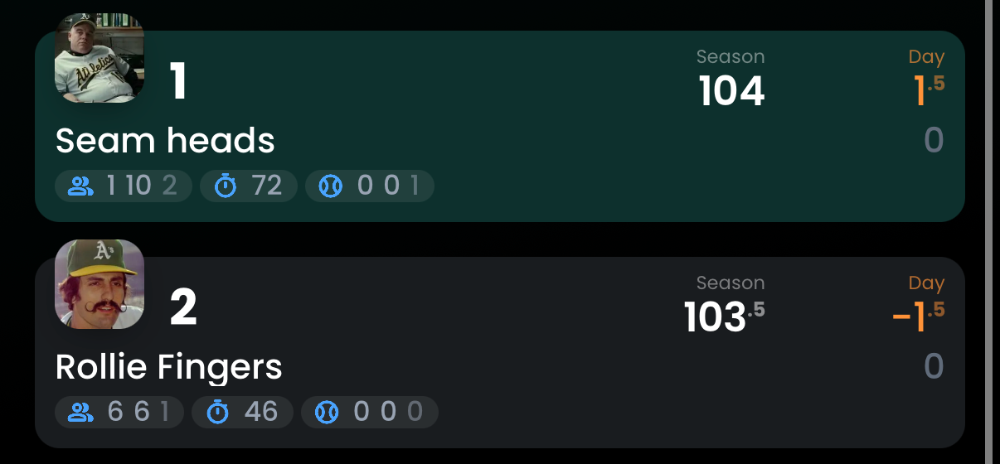

Did ya miss me? Avg/Wk is season lineup sessions over fourteen weeks; the arrow compares this
window's per-week pace against that average. Moves is season adds plus drops. Trades is
season trades completed.
Notes: Millville Meteors managed four sessions
across nineteen days (bruh), a fifth of its usual pace, and the ghost pill above is earned. Seam Heads
logged the second-most raw sessions (138) but that's actually below their own torrid season average —
everyone else just caught up.
| Team | Status | Avg/Wk | Window | Moves | Trades |
|---|---|---|---|---|---|
| Pat | 🧘 Committed | 33.7 | 169 ↑ | 72 | 4 |
| Vin Mazzaro fan club | 🧘 Committed | 36.4 | 150 ↑ | 134 | 19 |
| Seam Heads | 📋 Steady | 67.9 | 138 ↓ | 155 | 8 |
| Rollie Fingers | 🔥 Locked in | 27.1 | 104 ↑ | 37 | 11 |
| Trazadone | 🔥 Locked in | 12.7 | 51 ↑ | 46 | 6 |
| Humongous Melonheads | 🔥 Locked in | 17.1 | 59 ↑ | 44 | 5 |
| philbell | 📋 Steady | 22.7 | 58 | 45 | 0 |
| John Henry Fan Club | 📋 Steady | 10.2 | 24 | 33 | 6 |
| Mommy | 📋 Steady | 6.6 | 15 | 42 | 2 |
| Sam | 👀 Monitor | 25.9 | 45 ↓ | 24 | 6 |
| Jonesin’ | 👀 Monitor | 9.9 | 17 ↓ | 55 | 12 |
| Millville Meteors | 👻 Manager went dark | 7.3 | 4 ↓ | 72 | 1 |
Still on top, I guess, with 103 roto points (SECOND PLACE), and a category profile that still reads like a cheat sheet: HR and RBI capped at 12 apiece. Pete Crow-Armstrong hit .385 with seven homers and six steals, and Luis García Jr. climbed 24 spots in the Oracle while running a 1.314 OPS of his own. Matt Chapman did the opposite, a .408 OPS that turns his age-33 flag from a footnote into a warning label. The John Henry trade brought back (back?) Noelvi Marte and a mid-round 2027 pick, the kind of move a team makes when it isn't desperate for anything, just bored, which is its own kind of insult.
Second again in the power rankings, but FIRST PLACE where it counts. WHIP slid two ticks, but Trea Turner kept the offense upright with an .840 OPS and 18 runs, solid without being loud, while Cal Raleigh's .594 OPS and one homer in 61 plate appearances is the least productive stretch a former MVP candidate can have without getting benched (kill me). Edgardo Henriquez rocketed from 1771 to 695 in the Oracle, over a thousand spots, which is another data point for the team moniker. For about ninety minutes on July 3rd, this team was in first place, and there is photographic evidence for all the suckers and losers, because that is how much the greatest league the world has ever seen means to me.

Up two on the back of two separate trades with Trazadone and a lineup that's finally cashing checks: Bryan Reynolds posted a 1.075 OPS with 15 runs, and Jake "deep-tracks-only" McCarthy, buried at Oracle rank 707, hit .375 with three steals and looks like the best waiver claim nobody actually drafted. QS and K remain the calling cards at 11 points each, SB and OPS sit at four, the same two soft spots from last month's(?) article. Michael Busch cratered to a .639 OPS, the kind of slump that makes you second-guess who got sold off in those trades. Shane Drohan jumped 406 spots in the Oracle and still only sits at 833, which tells you plenty about how deep this farm system actually goes.
Fourth again, same as most of the summer, SB and QS still capped at 12 each while the rotation quietly does more work than the lineup gets credit for. Hunter Goodman drove in 17 runs on a 1.031 OPS, and Ketel Marte, 33 and apparently allergic to slowing down, hit .333 with six homers. Jakob Marsee went the other way, a .469 OPS across 71 plate appearances that's dragging on an otherwise solid group. ERA and WHIP remain the soft categories at five and six points, the same ceiling this roster has bumped its head on for weeks now. Good team, good players, but it still seems like this team's destiny is out of its hands.
Down two after the Rollie trade shipped Spencer Strider here while he sits on the IL, a help-arrives-eventually move if there ever was one. Kyle Schwarber, old and unbothered by it, posted a .927 OPS with six homers, and Rafael Devers added a 1.108 OPS of his own. Rhys Hoskins is the drag, a .533 OPS in 50 plate appearances that's sunk him to Oracle rank 765, warning label earned twice over. WHIP and ERA remain elite at 12 and 11 points, but QS at four and SVH at 1.5 explain why dominance on the mound keeps not turning into standings points.
Third in the standings at 93 points, sixth here, because the Oracle's active-roster outlook for this team is basically a flat line and the model isn't buying the depth behind the stars. Junior Caminero is doing the heavy lifting, 11 homers and 25 RBI for a 1.236 OPS, with Wyatt Langford right behind him at 1.198. Eugenio Suárez, 35 and fading fast, hit .175 for a .670 OPS, the one obvious soft spot in an otherwise loaded lineup. HR and OPS lead the league at 11 points apiece, RBI and WHIP sit at eight, respectable but not enough to pull this roster out of the pack. Whatever gap exists between the standings and the Oracle here, it isn't closing on its own.
Seventh again, propped up almost entirely by Jackson Chourio's presence, even in a window where he wasn't the one doing the carrying. Cags hit six homers with an .859 OPS, and Willson Contreras (rip) chipped in an .865 OPS of his own. Ian Happ was the drag, a .565 OPS across 69 plate appearances that undid a lot of the good work elsewhere. Four lineup sessions the entire window, fewest in the league, and I genuinely can't tell if that's confidence or surrender.
I look away for 30 seconds (19 days), and Mommy is in eight??? Last in the standings at 22 points and dead last in the Oracle too, but credit where it's due, this was a fun week(?) to watch. Dansby Swanson hit .323 with nine homers and 29 RBI, the best individual week anyone posted in this league, and Freddie Freeman, 37, added a .473 on-base clip that would embarrass players half his age. Brandon Lowe balanced it out with a .697 OPS that kept the team firmly in twelfth anyway. SB and HR remain the only categories worth mentioning at five and four points, everything else sits at two or below. Fifteen lineup sessions, mostly spent rearranging deck chairs on a roster that isn't headed anywhere this year, but we just can't manage to look away.
Up one on the back of the league's most active manager, 169 lineup sessions and counting, though the standings still only show 57 points for the effort. Mookie Betts hit .358 with five homers, and Foster Griffin quietly threw 25.1 innings at a 1.07 ERA with 26 strikeouts, the best pitching week nobody in this league is talking about. JJ Bleday cratered to a .600 OPS, the one hole in an otherwise solid stretch. RBI and R remain the strengths at nine and seven points, ERA and WHIP the weaknesses at three each, and the gap between effort and results here is starting to feel personal.
Up one despite a week that could have easily gone the other direction. Bryce Harper, age 34, hit .324 with five homers and 18 RBI, and Ryan O'Hearn, age 33, chipped in 16 RBI of his own. Zac Gallen supplied the disaster, a 9.27 ERA over 22.1 innings, the single ugliest pitching line in this entire article. SVH still leads the league at 12 points, the one category this whole roster leans on, while QS and K sit at two each.
Up one after a busy stretch of business with Vin Mazzaro fan club, netting Gunnar Henderson, Curtis Mead, and Emerson Hancock for Bo Bichette, Shota Imanaga, and Shane Bieber, a challenge trade in the loosest sense of the phrase. Brandon Marsh hit seven (seven?!) homers with an .896 OPS, and T.J. Rumfield added a 1.032 OPS in the same window. Randy Vasquez posted a 13.03 ERA over 9.2 innings, the kind of start that sends a manager straight to the waiver wire. WHIP and ERA sit at seven and four points, modest strengths propping up an otherwise thin roster.
19 days between posts, but Jonesin' aged like 20 years had passed. Down three, the week's biggest fall, and the categories explain most of it: R and ERA sit at one point each, a combination that puts a ceiling on everything else this roster tries to do. Sam Antonacci hit .339 with four homers and 15 runs, and Kazuma Okamoto added a .943 OPS of his own, but neither could offset Drake Baldwin's .279 OPS in 63 plate appearances, a genuinely brutal stretch from a player ranked in the league's top 80.